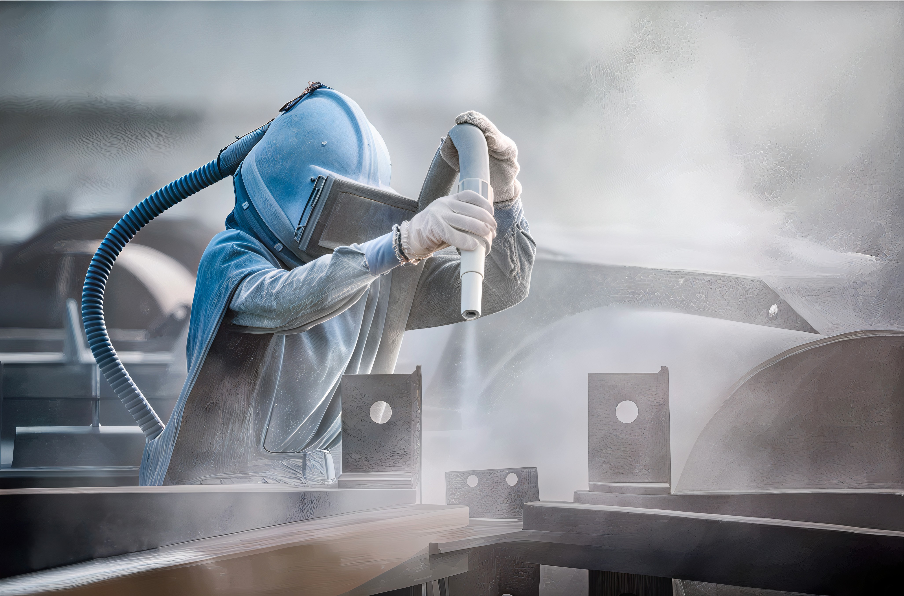

PROFESSZIONÁLIS ROZSDAELTÁVOLÍTÁS
Több mint 25 éves tapasztalattal a fémfelület tisztítás területén Székelyudvarhelyen
Több mint 25 éves tapasztalattal a fémfelület tisztítás területén Székelyudvarhelyen
A Korózió Stop Kft. már több mint két évtizede áll ügyfelei szolgálatában Székelyudvarhelyen és környékén. Célunk a megbízható, környezetbarát és költséghatékony szolgáltatás biztosítása lakossági és ipari ügyfelek számára egyaránt.
Minden munkánkat a legmodernebb technológiával és szakértelemmel végezzük, hogy biztosítsuk a legjobb eredményt minden ügyfelünk számára.

Kvarchomokkal/ acél söréttel/aluminium oxiddal történő hatékony rozsdaeltávolítás fémfelületekről. Az eljárás gyors és tökéletes felületet biztosít a további kezelésekhez.
Tartós, egyenletes és minőségi festékréteget biztosítunk, amely ellenáll az időjárási viszontagságoknak és hosszú távú védelmet nyújt.
Üveg, fa és más felületek professzionális mattosítása. Ideális dekorációs célokra vagy további felületkezelések előkészítésére.
Komplett gumiszerelési szolgáltatásokat kínálunk, hogy időt takarítson meg. A homokfúvás előtt és után is vállaljuk a gumiabroncsok le- és felszerelését.
Terepmunka esetén jelentősen csökkenthetjük a munkavégzés során keletkező felszálló por mennyiségét a vizes homokszóró berendezésünkkel.
Felmérjük igényeit és részletes ajánlatot készítünk az elvégzendő munkákról.
A felületet előkészítjük a homokfúvásra, eltávolítva minden nem kezelhető elemet.
Kvarchomokkal történő professzionális tisztítás a tökéletes eredmény érdekében.
Igény szerint porfestés vagy egyéb felületkezelési eljárás a tartós védelem érdekében.
Húzza végig az egeret a képen, hogy lássa a tisztítás eredményét!
Akár kisebb, akár nagyobb projektről legyen szó, vegye fel velünk a kapcsolatot még ma!